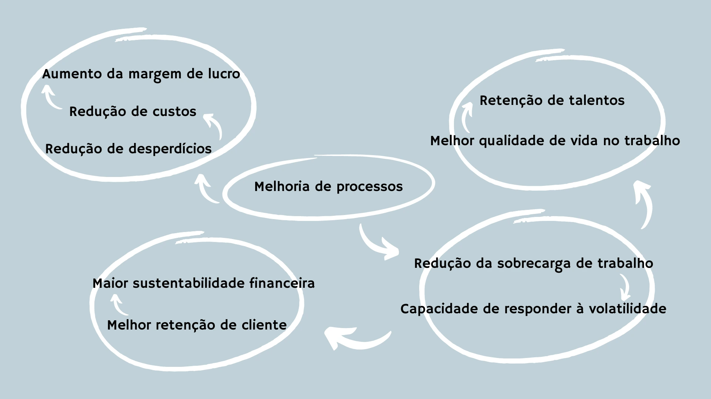

Sobre
Reunimos mais de 15 anos de experiências atuando em diversas áreas, como desenvolvimento de software, logística, saúde, ciência de dados, construção, saneamento, eventos, financeiro, varejo e pesquisa - o que nos propiciou um grande portfólio de conhecimentos e ferramentas, e a capacidade de transbordá-los para outros domínios.
Agilidade
As metodologias ágeis surgiram como uma resposta ao modelo tradicional de gestão, conhecido como Cascata ou Waterfall. Neste, o produto é planejado e desenvolvido inteiramente, havendo sua entrega apenas quando todas as suas partes estivessem prontas. Em meados de 1930 surgiu a ideia do desenvolvimento iterativo e incremental, que consiste em partir de um produto fundamental e, a cada iteração, incrementá-lo com melhorias e novas funcionalidades, entregando valor antecipadamente e possbilitando o aprendizado a partir deste, até chegar no produto final.
Com o tempo, essa ideia se desenvolveu até chegar em estruturas que hoje chamamos de metodologias ágeis. No entanto, estas caíram exatamente naquilo que se buscava mudar no início: modelos preconcebidos e engessados, são implementados como se fossem sagrados, onde ajustes em suas regras acabam não sendo bem-vindos, gerando um foco excessivo em aplicá-los integralmente e não na entrega de valor ao cliente. E, mais ainda, o mundo não é estático e cada empresa é um universo diferente. Logo, cada organização precisa de uma solução customizada para seus desafios, segmentos e objetivos.
Nossa abordagem
O conceito vem do mundo dos esportes. Um atleta ágil consegue analisar a partida, desviar dos adversários, passar a bola quando está marcado, manter a eficiência e colaborador para que a equipe atinja o objetivo do jogo. Para isso, ele responde ao jogo em tempo real, se adaptando ao ambiente. Se este jogador seguir diretrizes rígidas e pré-formuladas, acabará se deparando com um adversário e perdendo a bola, ou passando-a a um colega de equipe no momento errado.
Trabalhamos com uma abordagem evolutiva, sem gera o excesso de mudanças trazido por uma reestruturação ou implementação de modelos ágil, e fornece as ferramentas necessárias para que gestão e colaboradores da sua empresa consigam analisar os cenários, melhorar os processos, desviar de obstáculos, resolver problemas, trabalhar em conjunto e entregar soluções de qualidade no tempo em que seu cliente precisa, apesar da volatilidade do mercado.
